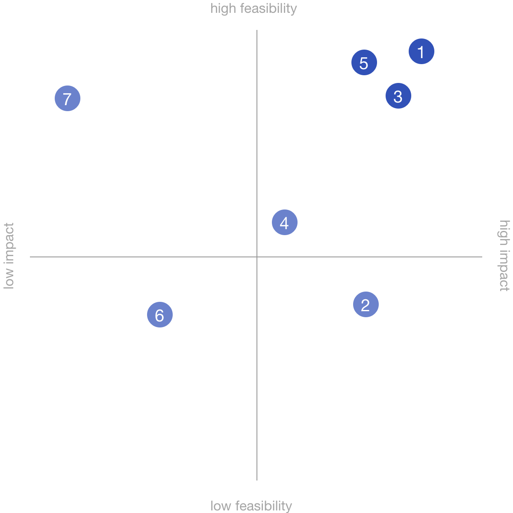
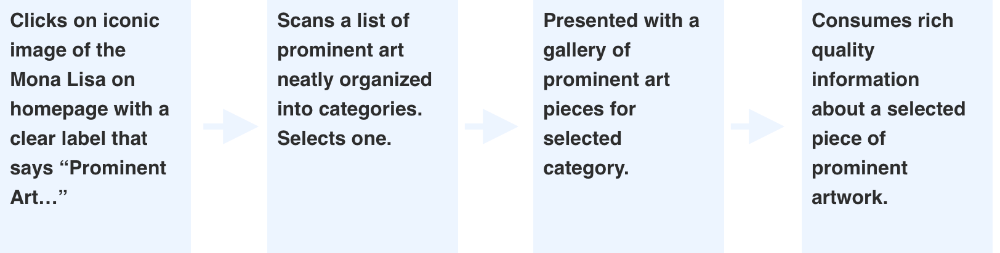

Understand the Users
back to table of contents
What we know about our users from the prompt: the user enters the Louvre website looking for information relevant to prominent pieces of art.
Now, why a user do this?
Because this was meant to be a 4 hr (max) exercise, I had to make some assumptions.
Assumptions
Users are deciding on whether or not they should buy Louvre tickets.
Users are visiting the Louvre soon and want to plan out the details of their trip.
“Prominent” includes permanent and well known Louvre fixtures such as the Mona Lisa.
User story 1

A young professional is planning an upcoming vacation to Paris, France and is debating on whether or not to visit the Louvre. She wants to know what the museum has to offer in addition to the Mona Lisa.
User story 2

An American tourist in Paris has tickets to visit the Louvre in the coming days. She wants to learn more about the famous works of art on display so she can plan her trip and hopefully not miss out on anything.
Ideate
back to table of contentsHere are 6 unconstrained ideas to solve our specific problem, followed by a translation into realistic features.
-
Offer a free course taught by a renowned art history professor.
Expert information — Provide expert quality information, but disclose it progressively. -
Arrange a coffee date with an acquaintance who has been there before.
Advice from peers — add a social feature to the website that allows like-minded visitors to share their experiences. -
Louvre to write “Louvre for Dummies”.
Make it easy — Don’t make the user think. Clearly outline what “prominent pieces of art” are available at the Louvre, and tell the users why they should care. -
Have the Louvre email personalized info immediately after ticket purchase.
Automated information delivery — allow users to opt-in to an informational email upon check-out. -
Have Louvre support automatically call users immediately after landing on their webpage, and walk them through all the relevant information.
Clear navigation — Provide a clear path to relevant information by adding iconic images to the home page that can easily be recognizable as “prominent”. -
Have a team of well-known celebrities coordinate and distribute Louvre's information through popular social media channels in an entertaining way.
Pre-exposure to Louvre’s offerings — Targeted ads on popular media outlets to communicate Louvre’s brand and offerings in a fun way. -
A pill that will give our users a thorough understanding of the Louvre’s layout. Once digested, they will know exactly where every piece of art is located, and which art pieces they should look at while there.
Digital experience — offer 3D tours of the Louvre, where users can click to navigate around the museum. The interface will visibly highlight all the prominent art pieces, and allow users to click on specific art, save and add to an itinerary for their trip.
Prioritize
back to table of contentsAfter coming up with some possible solutions, I plotted them on a feasibility / impact matrix to prioritize. My design focuses on the ideas with a combination of high impact and feasibility -- mapped on the top right of the matrix.
Design
back to table of contentsUser flow
Final design

The solution starts with idea #5 in providing an iconic / clearly recognizable piece of art — the
Mona Lisa — front and center of the home page with the headline “Prominent Art Pieces,” giving
the user a clear entry point for sought after information.
Next, adopting idea #3 to not make the
user thing. The proceeding pages present the different categories of “prominent art,” along with
image galleries for each one. This adds some progressive disclosure, giving the user some
digestible information.
Lastly, when specific image is clicked, rich, detailed information is
displayed for that particular art piece — idea #1.
Final Thoughts
back to table of contentsThis was a 4-hr project that was never meant to be a complete redesign. My intention here was to showcase my design process. My solution — a med-fi wireframe — is meant to fit seamlessly into the existing Louvre design by leveraging already existing content and design patterns, which are common constraints. If I had more time, I would’ve done a few things differently. First, starting with a validation of my user stories, which can be achieved through interviews. Secondly, I would’ve liked to use terminology that resonates with the user. I stuck with “prominent art” because that’s what was in the prompt. But, does this verbiage mean anything to our users? A simple A/B test can help answer this question. Lastly, I would’ve loved to pursue idea #7 a little further. It was plotted as having a high impact, but low feasibility. It would’ve been fun to spend a couple more hours flushing out the idea of 3D experiences that intertwine digital with physical space to see if there are attributes there that can be applied to a more feasible solution.